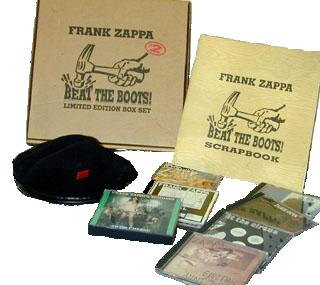

Заппа'zУх!Ой!
русский более или менее регулярный бюллетень для поклонников американского композитора
Frank'а Vincent'а Zappa'ы
Выпуск.37 (18 февраля 2002)
Рекомендации лучших собаководов
Принцип Гайдара. Узнал сам - впарь товарищу. Тимур так поступал. Попробовал ходить в "Катсан". Понравилось. Подсыпал Чуку и Геку. Потом подрос. Стал стоматологом Петровой из Воронежа. Подшефной бабке нес "Колгейт", в подъезде отколупнул самую малость, дыханье пальцем освежил. Похмелье сняло как рукой. Теперь рекомендует всем по поручению российской ассоциации дантистов. Настоящий пионер с барабаном и на велосипеде.
А я вот, даже не на коньках, как выяснилось. Совсем плохой и галстук на мне не по уставу. Серенький с искрой. Товарищи даже вежливо интересуются, здоров ли, нет? Вот, например, совсем недавно хороший человек Михаил Пафнутьев письмо прислал. Удивляется почему А сказал, то есть, пару лет назад диски серии Beat The Boots 1 присоветовал, а Б, иными словами Beat The Boots 2, до сих пор не соизволил. Явные нелады с логикой. Во всяком случае, так Мальчиш-Кибальчиш не поступает. Я уже не говорю, про всероссийский институт гигиены имени Эрисмана.
Стыдно. Тем более, что польза от самогона очевидная. Бутлеги развивают воображение. Фрэнк Заппа, например, сам верил и всех убеждал, что существует, всемирный, хорошо законспирированный заговор кокаинистов и онанистов, имеющий цель подрывную - всеобщее и полное обогащение отбросов рода человеческого. На самом деле, попробуйте продать немного Заппы на Горубухе (как бы она теперь ни называлась), и вы поймете, сколь буйная фантазия у нашего кумира.
Что, в общем-то, не плохо.
С другой стороны, прослушивание самопальных концертных записей, в которых правая дорожка звуковая навита на левую, и самому фанату помогает видеть невидимое (ну, например, музыкальную пантомиму клоунов-содомитов The Sanzini Brothers) и слышать неслышимое (скажем вокал Роя Эстрады в Bacon Fat). Иными словами, заставляет работать головой. Из простого приложения к ушам делает волосатую источником сладких грез и потрясающих видений.
Что уже просто замечательно.
Естественно, с учетом всей этой крупной суммы положительных факторов, решение ФЗ продолжить успешную экспроприацию экспроприаторов путем легального переиздания пиратских материалов, не могла не обрадовать прогрессивную музыкальную общественность. Да и первая серия Beats The Boots столь успешно продавалась, что грех было не тяпнуть еще по маленькой. А посему в июне 1992 Семья и Rhino Records снова налили и дружно вздрогнули.
То есть, привычно затарив картонную коробку компактами (шесть одинарных и один двойной), отправили невзрачную в большие магазины и маленькие лавки на реализацию.

Универсальная коробочка (удобная как для складирования винила, так и кассет) 330 на 330 на 72 миллиметра, помимо собственно носителей звуковой информации содержала еще и
и
И голову есть чем прикрыть, и глаз порадовать, и слух. Обслуживание первый класс.
Но главное, конечно, звуки. Базовая составляющая. Основополагающая. И они, законно оцифрованные Бобом Стоуном, отменно хороши. Изрядны, по-русски говоря.
Собственно, по этому принципу и отбирались сотрудником Rhino и коллекционером музыкальных вещдоков Томом Брауном. Сначала качество звучанья, затем уже все остальное.
И вот, что из его длинного списка было одобрено Семьей. Дозволено издать от имени компании FOO-EEE.
R2 71017. Disconnected Synapses. Начало феерической карьеры веселой гопки с дуэтом паяцев Flo'n'Eddie. Palais Gaumont, Paris, 15-Dec-1970. Специальный туземный гость - Jean-Luc Ponty. Соответственно, виолончельное соло скрипача в тридцатидвухминутном King Kong'е. Учитывая публично выражаемую всей Семьей нелюбовь к "маленькому французику", счастливый недосмотр. В том же King Kong'е соло на ударных Aynsley Dunbar'а. Веселый Penis Dimension. И песенки времен Freak Out! в несравненном исполнении двух гадин и ехидин Howard'а Kaylan'а (Eddie) и Mark'а Volman'а (Flo). Качество - слив с микшерского пульта.
R2 71018. Tengo Na Minchia Tanta Дата - предмет ожесточенных споров знатоков концертной жизни FZ и его банд. Скорее всего записано раньше, чем Disconnected Synapses. Возможно даже в мае-июне 1970 на Fillmore East или West. В любом случае, опять Flo'n'Eddie. Необычный вариант наисмешнейшей Groupie Routine - логически наиболее осмысленно развивающийся сюжет, построенный на смеси номеров из Fillmore East и 200 Motels. Увы, с финалом, как обычно, грубо уведенным скаредными бутлегерами.
Но, впрочем, главный гвоздь программы, одно из самых ранних исполнений Inca Roads, с длинным гитарным соло Фрэнка и двадцатью секундами Easy Meat перед самой кодой. Качество - микшерский пульт.
R2 71019. Electric Aunt Jemima Солянка номеров, надерганных из трех различных выступлений изначальных Матерей Изобретения. Denver, 03-May-1968; Essen, 28-Sep-1968; Amsterdam, 20-October-1968;
Замечательная вещица. Альбом без слов. Plastic People (Louie Louie не в счет). Непрерывный (даже трудно поверить, что склеены куски из трех концертов) поток музыкального сознания. Великолепный, может быть, самый лучший из легально опубликованных King Kong'ов. Композиция объявленная, как English Tea Dancing Interludes, на самом деле, состоит из пяти различных музыкальных тем, парад которых открывает Octandre. Ни больше и ни меньше. Произведение Эдгара Вареза - любимого композитора Фрэнка Винсента Заппы. Затем последуют Plastic People, King Kong, America Drinks и завершает буйство в полном согласии с неизменной дадаистской традицией трехкопеечным рок-н-ролльный риф от The Surfaris - Wipe Out.
Для эрудированного слушателя шанс войти на века в историю Запповедения, атрибутировав таинственную мелодию под номером два в списке песен альбома - WhДt.
Качество - нерадиво обработанный слив с микшерского пульта
R2 71020. At The Circus. Этакая подпольная имитация пластинок серии You Can't Do That On Stage Anymore. Нарезка из теле и радио трансляции Uddel, The Netherlands, 18-Jun-1970 и Circus Krone in Munich, 08-Sep-1978. Один из самых коротких по продолжительности звучания бутлегов серии. 42 минуты. Качество - FM радио.
Много клавишных Duke'а - Underwood'а в песенках семидесятого. И синтезаторов Mars'а - Wolf'а в номерах семьдесят восьмого. Последние, как на подбор, до-альбомные варианты песен Sheik Yerbouti и Joe's Garage. Много разнообразных и заковыристых гитарных соло маэстро. Самое дивное - в заключительной песне Conhead.
Главная достопримечательность - коротенькая штучка Seal Call Fusion Music. Замечательнейший барабанщик Vinnie Colaiuta играет и поет тюлений джаз под руководством выдающегося дрессировщика морских млекопитающих FZ.
R2 71021. Swiss Cheese/Fire! Пармаунт. Бутлег бутлегов. Звезда всей серии.
А. Можно смело считать, что практически (ну, ладно, с минимальными купюрами) воспроизведен типичный концерт закатной поры эпохи Flo'n'Eddie.
Б. Единственный официально доступный вариант космогонической сюиты Divan (Once Upon A Time, Sofa, Stick It Out, Divan).
В. Исторический документ, минута за минутой фиксирующий начало и скоротечное развитие того самого пожара (Casino, Montreaux, Switzerland December 4, 1971), который погубил аппаратуру и рождественское европейское турне ФЗ, зато участников группы Deep Purple сподвиг на сочинение хита о дыме над водой.
FIRE! Arthur Brown, in person.
Well if you just calmly go toward the exit, ladies and gentlemen.
Go toward the exit, calmly
Please calmly, calmly towards the exit.
Лично же мне еще мил, неожиданным поворотом вечнозеленой темы Музыкант и Мокрощелка. Бедолга лабух уж не звенит металлом эрекции размера Bwana Dick, а горько сетует о том, что в результате падения давления в его системе водопроводной оно накачивать способно только слезные железы.
The last dude to do her
Got in and got soft;
She blew it,
And laughed in his face, yeah
Face, yeah
Yeah-heah
Tears began to fall
Tears began to fall
В общем, двойничок дорогого стоит. Нужно только вынести начальных шесть минут бессмысленного и монотонного синтезаторного воя, что будет посильнее feedback'а нескончаемого Weasels Ripped My Flash.
Качество звука - приличный третий ряд. То есть, в общем и целом вполне терпимое, но Anyway The Wind Blows во всем блеске doo-wop шика Flo'n'Eddie придется все-таки довообразить, дофантазировать самому.
R2 71022. Our Man In Nirvana Los Angeles, 08-Nov-1968. Изначальные Матери. Фотография на обложке Фрэнка и Гейл времен совместного концерта на стадионе с оркестром Зубина Мейты сделана двумя годами позже. Специальный гость - безумный Larry "Wild Man" Fischer.
Длиннющее гитарное соло Фрэнка в Sleeping In A Jar плюс прекрасный в своей неизменной нескончаемости King Kong, который бессовестные самогонщики, заждавшиеся естественного завершения композиции, грубо и бестактно оборвали на исходе всего-то навсего тридцать-первой минуты.
Качество записи - сносный двенадцатый ряд.
R2 71023. Conceptual Continuity Detroit, 19-Nov-1976. Ряд все тот же, двенадцатый, тринадцатый.
Впрочем, концертик примечательный. Правда, за недельку до представления группу покинула Bianca Thornton и горечь утраты можно легко прочувствовать, сравнив Wind Up Workin' In A Gas Station на бутлеге и тот, что Фрэнк включил в шестой том You Can't Do That On Stage Anymore. Зато в самом представлении, в его финальном заключительном джеме, приняли участие не один или два, а целая бригада специальных гостей. Во-первых, Flo'n'Eddie, за сценой баклуши бившие после своего собственного разогревающего отделения. А, во-вторых, тоже без дела в этот вечер почему-то скучавшие - барабанщик Grand Funk Railroad Don Brewer и басист Mahavishnu Orchestra Ralph Armstrong.
Впрочем, капитальная шутка состоит в том, что на пластиночке вы не услышите, ни первых двух, ни сводную джаз-рок ритм-группу. Услышите шум публики и аплодисменты, The Poodle Lecture, несколько прекрасных гитарных соло (особо отметим, украсившие The Torture Never Stops) и все. Увы, Pound For A Brown начинает прорастать из City Of Tiny Lights и тут невероятно куцый бутлег (меньше сорока минут) заканчивается. Good Night Austin, Texas.
Продолжение концерта с гостями и знакомыми ищите на другом самогоне. Marvellous Stunner. Увы, неофициальном. Редком. Оставшимся в доцифровой эпохе виниловых блинов.
Ну, что ж поделаешь, не одни лишь в жизни бриллианты, изумруды и золотые звезды Героя Советского Союза. Итак, вон сколько блестящих насчитали. Едва хватило пальцев и ширины груди. И остается только ответить на главный вопрос повестки дня, почему автор знал и молчал, вел себя недостойно тимуровца и члена отрядной редколлегии, под одеялом жрал бутерброды и не давал в поход собравшимся товарищам Плейбой. Pringles не втюхивал, Domestos в горшки знакомым и друзьям не наливал?
А просто. Совесть не позволяла. В отличие от дисков и кассет Beats The Boots 1, сидючки и даже ленты Beats The Boots 2 не переиздаются. Нет их. Ни порознь, ни в коробке. Еще пару лет назад, кассеты можно было отыскать на Cdnow, а сейчас тю-тю. Николай-Иван-Харитон-Ульяна-Яков. Иными словами, только и исключительно Ebay. Мелькают они на барахолке регулярно. С месяц назад очередной какой-то герой всех прочих конкурентов красиво сделал на отметке 150 баксов за комплект.
Так что если у вас есть столько, и еще пол-столько за пересылку и таможню, то будет счастье людям на земле. Вопросов нет.
Карты вам в руки. Кредитные и дебетные. Товар сертифицирован. Рекомендации лучших собаководов. Короче, Биттнер и никаких гвоздей!
Искренне Ваш, Владимир Советов
http://www.arf.ru/
| Домой | Заппа'zУх!Ой! | Поиск | Хозяин |